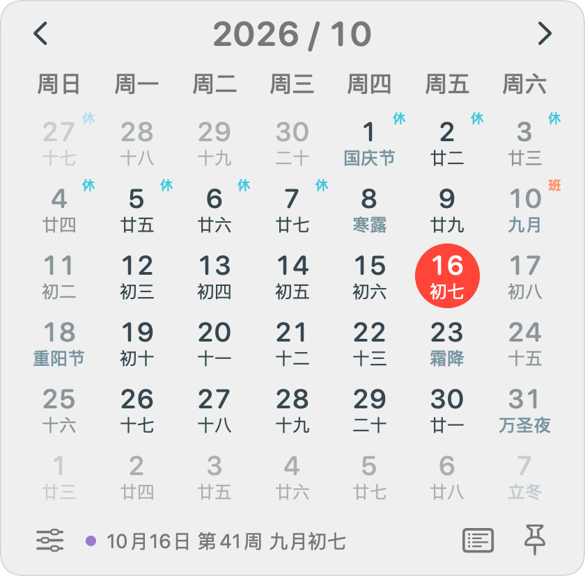
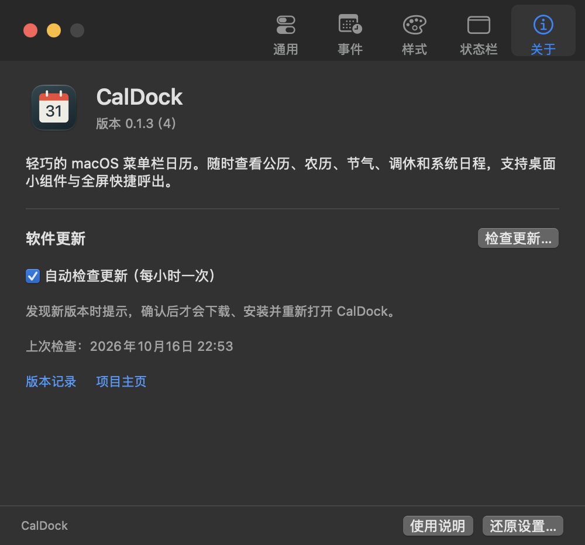

农历节气，一起看
公历与农历同屏，传统节日、二十四节气清楚可见。已收录年份的官方调休，一眼分清休息与补班。
A LITTLE CALENDAR. ALWAYS CLOSE.
看农历、查调休、读日程。
想起时点一下，需要时就在手边。
macOS 14+ · Apple Silicon & Intel · 免费开源

原生 SwiftUI 月历视图 · 默认宽度 280 pt
把屏幕留给工作，
把日子交给
CalDock。
MADE FOR YOUR EVERYDAY
熟悉的日历，多一点贴心的细节。
公历与农历同屏，传统节日、二十四节气清楚可见。已收录年份的官方调休，一眼分清休息与补班。
授权后读取系统日历，查看事件圆点与当天议程，也能筛选日历、创建事件。你的日程始终留在本机。
默认快捷键 ⌃⌘X，无需退出全屏。还支持悬停打开、面板固定和键盘翻月，顺着你的习惯来。
菜单栏图标随系统明暗调整。配色、字号、尺寸和状态栏模块都能自定义，紧凑也可以很合眼缘。
原生 WidgetKit 月历提供小、中、大三种尺寸。农历、星期起始与配色可调整，在桌面或通知中心随时查看。
默认按分钟更新，收起面板即释放日历视图。日程通过系统变更通知刷新，没有额外常驻后台服务，也没有统计 SDK。
NATIVE, DOWN TO THE DETAILS
五个紧凑的设置页，把调整留给你。
每一个选项，都对应实际功能。

A FEW GOOD QUESTIONS
需要 macOS 14 或更新版本。Universal 安装包同时支持 Apple Silicon 和 Intel，下载安装时无需挑选芯片架构。
打开 DMG，将 CalDock 拖入“应用程序”后启动。添加小组件时，在桌面或通知中心选择“编辑小组件”，搜索 CalDock 即可。请只运行一个应用副本，避免重复菜单栏图标。
macOS 隐藏整个菜单栏时，图标也会隐藏。使用默认快捷键 ⌃⌘X，就能在当前全屏空间呼出月历；你也可以在设置里更改快捷键。
无需注册 CalDock 账号。系统日程使用你在 macOS 已配置的日历。当前内置 2026 年官方调休数据，未收录年份不会猜测补班；节气提供日期，不提供精确交节时刻。
A SMALL SPACE IN YOUR DAY
为你的菜单栏，添一份刚刚好的便利。